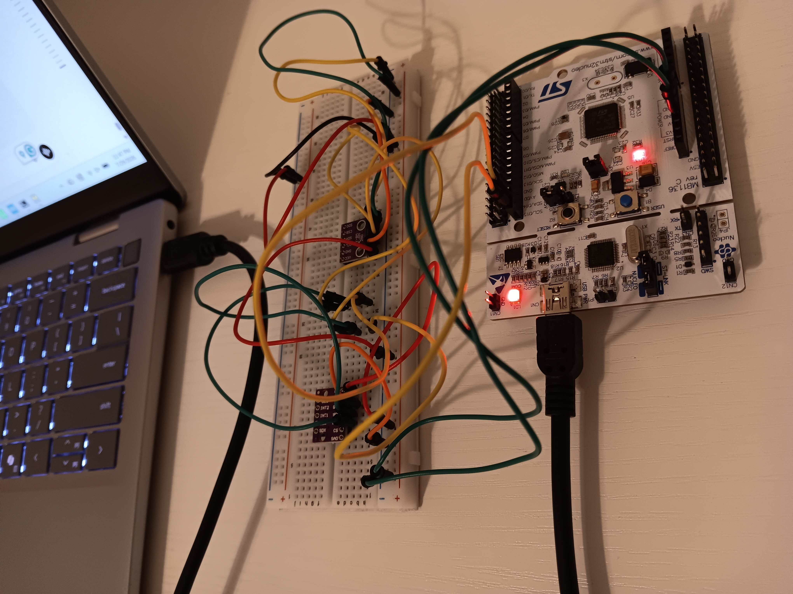

AstraRT is a modular embedded firmware runtime framework developed for the STM32F446RE microcontroller. The project provides a reusable software architecture for building embedded applications by organizing hardware abstraction, peripheral drivers, runtime services, and application logic into independent layers.
The framework integrates multiple communication peripherals, sensor drivers, task scheduling, telemetry, and diagnostics into a structured runtime environment designed for maintainability, scalability, and hardware reuse.
AstraRT initializes the STM32F446RE platform by configuring system clocks, GPIO, and communication peripherals through the STM32 HAL. This establishes the hardware foundation required for the runtime environment.
Hardware peripherals are accessed through modular driver interfaces for GPIO, I2C, SPI, and UART, allowing application code to communicate with devices without directly interacting with low-level hardware configuration.
Sensor drivers for the BME280 environmental sensor and BMI160 inertial measurement unit communicate through the framework's hardware abstraction layer to collect and organize device data.
Runtime services manage periodic tasks, telemetry, command handling, and system diagnostics, providing a structured environment for embedded applications.
The layered architecture separates hardware interfaces, runtime services, and application logic, making the framework easier to extend, debug, and reuse across future embedded projects.
Designing a modular firmware architecture for long-term maintainability
Solution: Organized the framework into separate hardware abstraction, peripheral driver, runtime service,
and
application layers to improve modularity and code reuse.
Managing dependencies between embedded software modules
Solution: Refined project organization, interfaces, and build configuration to reduce coupling and maintain
clean communication between framework components.
Developing reliable communication and debugging interfaces
Solution: Implemented UART-based command handling and debugging utilities to monitor runtime behavior,
telemetry, and system status.
Integrating external sensors through hardware communication interfaces
Solution: Validated I²C and SPI communication with BME280 and BMI160 sensors while debugging
hardware-software
interactions during testing.
Building a framework that could support future embedded projects
Solution: Designed reusable runtime services and modular interfaces that simplify the addition of new
sensors,
peripherals, and application features.
Source code, project documentation, and runtime demonstrations are available in the GitHub repository.
Email: zainaboyekade@gmail.com
GitHub: github.com/zainaboyekade-dot